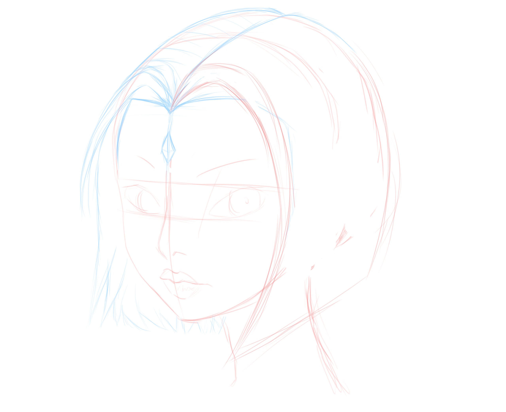

.transformElement {
transition: all 1s linear;
}
/* Example of button color change */
.buttonColor {
background-color: #f9008e;
}
.buttonColor:hover {
background-color: #00a940;
}
.multiTransformElement{
transition: background-color, transform;
transition-duration: 1s, 0.5s;
transition-delay: 500ms, 1s;
transition-timing-function: ease-out, ease-in;
}
.buttonFlip:hover{
transform: rotateY(180deg) rotateX(180deg);
}
.buttonColor:hover {
background-color: #00a940;
}
const ActivateTransitions = () => {
const elements = document.getElementsByClassName("transformDiv");
for (let i = 0; i < elements.length; i++) {
elements[i].classList.add('moveDiv');
}
};
const DeactivateTransitions = () => {
const elements = document.getElementsByClassName("transformDiv");
for (let i = 0; i < elements.length; i++) {
elements[i].classList.remove('moveDiv');
}
};
.animationButton1{
animation: basicAnimation 1s ease-out alternate infinite;
}
@keyframes basicAnimation {
0% {
border-radius: 0%;
}
100% {
border-radius: 50%;
background-color: #00a940;
}
}
@keyframes basicAnimation {
from {
border-radius: 0%;
}
to {
border-radius: 50%;
background-color: #00a940;
}
}
.animationButton {
transition: all 0.5s ease-out;
animation: basicAnimation 2s ease-out infinite alternate;
animation-delay: 2s;
}
.animationButton:hover {
border-radius: 30%;
background-color: #00a940;
}
.animationButton10 {
animation: multiStepAnimation 5s ease-out infinite;
}
@keyframes multiStepAnimation {
0% {
transform: scale(1) translate(0) rotate(0);
background-color: green;
}
20% {
transform: scale(1.2) translate(20px, 30px) rotate(90deg);
background-color: blue;
color: white;
}
40%,
50% {
transform: scale(0.5) translate(60px) rotate(-90deg);
background-color: yellow;
color: black;
}
65% {
transform: scale(0.5) translate(-150px) rotate(-90deg);
background-color: red;
color: white;
}
90% {
transform: scale(0.5) translate(-150px) rotate(-190deg);
background-color: purple;
}
100% {
transform: scale(1) translate(0) rotate(0);
background-color: green;
}
}
.animationButton {
animation: borderAnimation 2500ms ease-out alternate infinite,
rotateAnimation 5s linear forwards,
colorAnimation 1.1s ease-in alternate-reverse infinite;
animation-delay: 0s, 1s, 0s;
}
@keyframes borderAnimation{
0%{ border-radius: 0%;}
100%{ border-radius: 100%; }
}
@keyframes rotateAnimation{
0%{ transform: rotate(0); }
100%{ transform: rotate(150deg); }
}
@keyframes colorAnimation{
0%{ background-color: #f9008e; }
100%{ background-color:#00a940; }
}